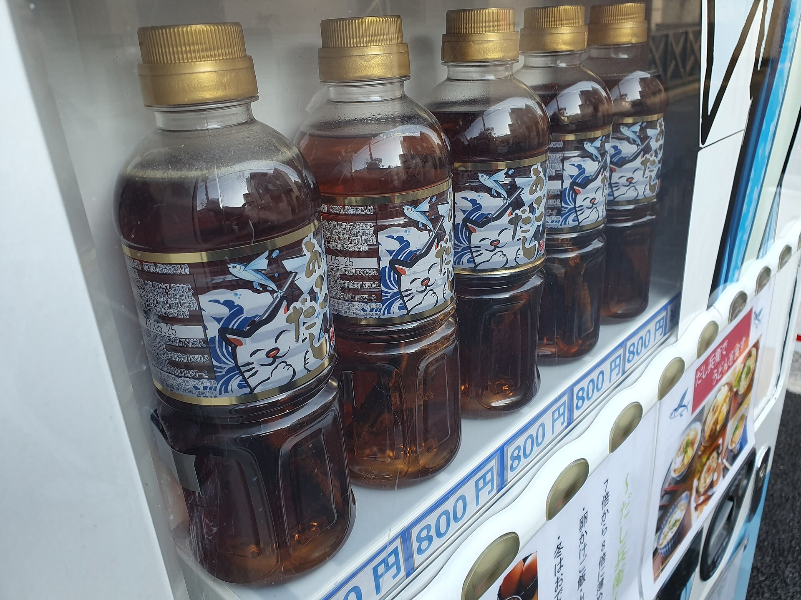
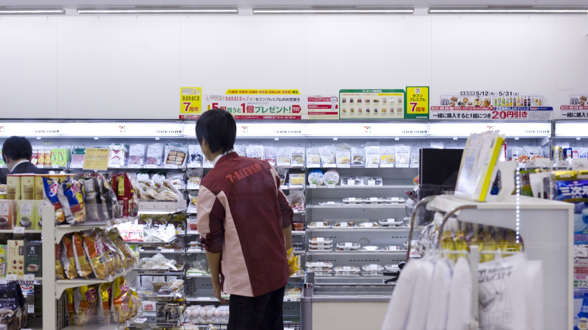

Japan with
Japan withA first-time visitor can spend a week chasing famous names and still miss the logic that makes Japanese food memorable. The revelation is not one secret dish. It is that a meal can tell you when you are, where you are and how ordinary life is organized—sometimes for less than a headline restaurant costs.
Japan’s tourism authority divides the field broadly into washoku, traditional Japanese food, and yōshoku, Japanese forms of Western cooking such as omurice, curry and hamburger steak. Even that neat division leaks. Ramen traveled through Chinese culinary history; curry arrived through British naval routes; convenience-store sandwiches became a local craft. “Authentic” Japan is not a museum menu. It is a country that absorbs, adjusts and regionalizes.
Start with a structure, not a celebrity dish
For your first full meal, order a teishoku: a set built around rice, soup, a main dish and small sides. Grilled mackerel, ginger pork, chicken nanban or tofu may take the central plate. Pickles sharpen the meal; miso soup changes by kitchen and region. Everything arrives as a small system rather than a single star.
“Set meal.” 定 means fixed or established; 食 means food or eating. At a restaurant, teishoku o hitotsu onegaishimasu means “One set meal, please.” It is ordinary restaurant language—not a ceremonial term.
This modest lunch opens the door to the celebrated idea of ichijū-sansai—one soup and three dishes—without pretending every set follows the formula exactly. MAFF describes that arrangement as a classic washoku model. UNESCO’s 2013 inscription is also often misunderstood: it recognizes the social practice of “washoku, traditional dietary cultures of the Japanese,” especially its relationship to nature and New Year, not a prize awarded to sushi as a single dish.
Eat the map: choose the dish that cannot travel unchanged
After a reliable set meal, let geography decide dinner. JNTO’s official directory lists more than 200 local foods, while MAFF documents regional cuisines across all 47 prefectures. The point is not to collect them all. It is to notice why they exist.
These are routes, not borders. You can find Hokkaido seafood in Tokyo and Hakata ramen in Osaka. Yet eating a dish near its ingredient base, cooking community and local variations adds information that a national checklist removes. In Hiroshima, the order of batter, cabbage, pork, noodles and egg is part of the experience; in Osaka, ingredients are commonly mixed through the batter. Calling both “Japanese pancake” hides the argument happening on the griddle.
Let the calendar order one course
Washoku’s seasonal reputation is not merely decorative leaves on an expensive plate. Autumn brings mushrooms, chestnuts, Pacific saury and new rice; winter makes hotpot feel necessary; spring turns bamboo shoots and mountain vegetables into signals of change; summer favors chilled noodles, eel traditions and icy sweets. Availability and the best season vary by region and by the year, so ask what is shun—at its seasonal peak—rather than treating a fixed internet calendar as a guarantee.
A useful rule is to spend on one ingredient at the moment it makes sense. That may be fruit rather than wagyu: a perfectly ripe persimmon, pear or local citrus. It may be a small piece of wagashi whose color and shape echo the month. Seasonality also has a hard edge. Popular seafood can face stock pressure, bad weather changes landings, and “seasonal” luxury marketing does not automatically mean sustainable. Ask where an ingredient came from and accept that the responsible answer may be “not today.”

The invisible ingredient is often dashi
Broth connects meals that look unrelated. Dashi made with kombu kelp, dried bonito, small dried fish or mushrooms supplies umami to miso soup, noodle broth, simmered vegetables and sauces. It explains why a clear liquid can taste complete. It also creates one of the most common surprises for vegetarians: a dish that appears meat-free may contain fish-based stock.
If you avoid animal products, specify fish and dashi, not only “meat.” JNTO recommends contacting set-menu restaurants and ryokan in advance, especially outside major cities. Shojin ryori, food associated with Buddhist temple practice, can be a rewarding path, but recipes and kitchens still need checking. Halal, kosher and serious allergy needs require the same precision; a friendly picture menu is not an ingredient audit.
Convenience food is part of the story—but not the whole story

An onigiri, egg sandwich or train-station bento can be exactly the right meal. Prepared food lets a traveler eat early, late or between trains, and an ekiben can turn regional ingredients into a portable introduction. But a week of convenience food trades discovery for predictability. Supermarket prepared-food counters, neighborhood diners, standing soba shops and lunch sets widen the range without requiring luxury reservations.
For one deliberate splurge, choose the experience you cannot reproduce cheaply: a counter where the cook controls timing, a ryokan dinner tied to the landscape, or kaiseki whose sequence follows the season. Reserve, arrive on time and disclose dietary needs before the kitchen buys and prepares ingredients. For ordinary meals, no tipping is customary. At an izakaya, the small dish served automatically may be an otoshi table charge rather than a free appetizer.
A realistic one-day eating plan
- Breakfast: learn the baseline.Rice, soup, grilled fish or egg, pickles and tea at a hotel, ryokan or breakfast restaurant.
- Lunch: order teishoku.Choose the main you want; observe how rice, soup and sides balance it.
- Afternoon: taste the season.Local fruit, wagashi, roasted sweet potato or another snack that makes sense that month.
- Dinner: eat the destination.Ask for the regional specialty, then add one unfamiliar small dish instead of over-ordering.
- Travel day: buy an ekiben.Eat it on a long-distance train with a tray table, not on a packed commuter service.
The weaknesses are real. Famous shops can consume hours in line. Fish markets are working places, not theme parks. Tiny restaurants may be cash-only, unable to alter a fixed broth, or uncomfortable serving a guest whose allergy they cannot safely manage. Raw seafood, alcohol and high-sodium dishes are not obligatory proof that you “did Japan correctly.” The best meal is one you can eat safely and enjoy.
Japan’s Consumer Affairs Agency says packaged-food labels are in Japanese and provides an English food-allergy communication sheet. Mandatory packaged-food labeling covers eight specified allergens, while additional items are recommended rather than mandatory. Restaurants and cross-contact need separate confirmation. For a severe allergy, carry the official sheet and your medication, contact restaurants in advance, and do not rely on appearance or machine translation alone.
What should you remember?
Remember the pattern, not a trophy list: structure, place, season and adaptation. Sushi tells one brilliant story about rice, preservation, fish and craft. Ramen tells another about migration and regional competition. Curry rice, omurice and convenience-store desserts show that Japanese food remains alive precisely because it is willing to change.
On TikTok LIVE, watch what people are actually lining up for with Yuji; in DraMap, practice the words that turn looking into ordering. Start with teishoku. Then ask おすすめは何ですか—osusume wa nan desu ka?, “What do you recommend?” The most valuable answer may be the dish you did not know to search for.
Sources and further reading
- Japan National Tourism Organization — Food & Drink in Japan
- JNTO — Local Foods directory
- Ministry of Agriculture, Forestry and Fisheries — Traditional Foods in Japan
- MAFF — Our Regional Cuisines
- UNESCO — Washoku intangible cultural heritage entry
- JNTO — Vegetarian Japan
- JNTO — Japanese customs and restaurant etiquette
- Consumer Affairs Agency — Food labeling and allergy communication sheet
Menus, ingredients, prices and operating practices change. Restaurant and dietary guidance was checked October 28, 2026; confirm directly before visiting.
Find the meal behind the sign.
Walk everyday streets with me on TikTok LIVE, then learn useful Japanese while playing in DraMap for iPhone.
Japan Unfolded is independently edited by Yuji Shimizu, creator of DraMap. The app link is publisher promotion; recommendations and interpretations are editorial judgments based on the cited sources.